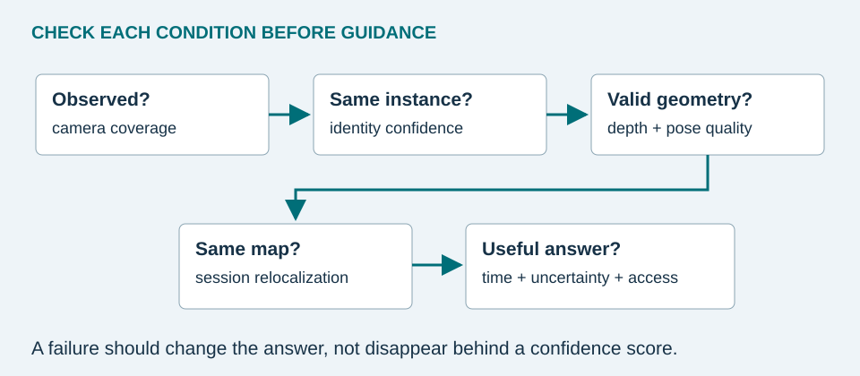

What each study contributes
| Study | Contribution | What it does not establish |
|---|---|---|
| CocoFormer [2] | Query-conditioned proposal context and bias-aware training. Reported frame detection AP rises from 26.28% to 31.26%. | That the object is still at its last-seen location, or that a phone can run the complete system reliably. |
| ESOM [3] | Streaming object memory and retrieval. Table 1 of arXiv v2 reports 4.02% success with learned discovery/tracking and 81.92% with both supplied by an oracle. | 81.92% end-to-end success with real perception. The oracle setting uses idealized information. |
| EgoLoc [5] | More robust poses and aggregation of 3D evidence across views. | That arbitrary phone sessions share a persistent coordinate system. |
The ESOM numbers above come from the July 2025 arXiv v2 manuscript associated with the WACV 2026 work. Its success criterion uses at least 0.05 spatiotemporal intersection over union with the ground-truth response track. It is a benchmark retrieval criterion, not a household object-recovery rate. Different tasks, splits, and oracle assumptions should not be placed in a single accuracy ranking. [3]


Failure modes and responses
| Failure | Visible consequence | Proposed response |
|---|---|---|
| Object moves out of view | Memory remains historically correct but outdated | Show timestamp and last-seen wording. Never infer an unseen update. |
| Drawer, bag, or occlusion | No direct sighting or incomplete crop | Keep the last supported episode and invite a deliberate scan. |
| Similar objects | Identity histories merge | Show candidate exemplars and ask for confirmation. |
| Lighting, blur, reflective surfaces | Weak detection, embeddings, or depth | Request a closer, steadier view and reject unreliable geometry. |
| Furniture changes or lost map | Failed alignment or drift | Use image/room evidence and rebuild or relocalize the map. |
| Thermal or battery limits | Dropped frames and delayed updates | Expose capture state and evaluate reduced sampling explicitly. |
A reproducible pilot evaluation
Enroll ten distinguishable objects in two rooms. Create scripted episodes with observed moves, hidden moves, distractors, and changed lighting. Log ground-truth identity, event time, and position separately from the application. Split enrollment, threshold tuning, and evaluation captures so nearly identical frames do not leak across splits.
Measure correct last-seen retrieval, false confident answers, unknown-object rejection, position error only when aligned, relocalization success, and abstention rate. Report median error with tail errors and the number of excluded queries. A system that abstains on every difficult case can appear accurate unless coverage is reported too. Do not invent test results: this tutorial supplies an evaluation plan, not data from a completed study.
Future directions and conclusion
Priorities include more stable instance identity, efficient persistent maps, user-controlled retention, and confidence calibrated on realistic homes. Sensor fusion and personalized models may help, but need device-level and user-level evaluation. Computer vision can support a searchable history of observations. Its most important interface commitment is to preserve the distinction between evidence, uncertainty, and the present world.